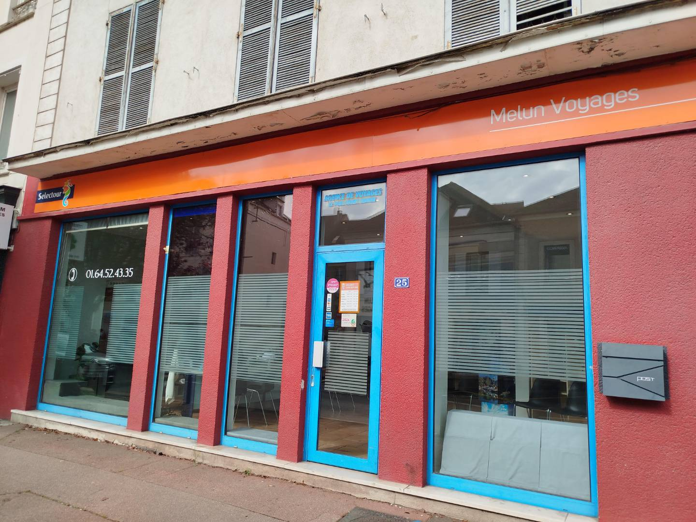

Mes expériences professionnelles
Développeur web - Melun Voyages
Durée : Mai 2023 à Juin 2023
Missions principales :
- Élaboration de la feuille de route technique : Définition des technologies et langages de développement à utiliser sur toute la chaîne de valeur.
- Développement d'un site web full-stack : Création d'un site web pour l'agence en utilisant HTML/CSS, SQL, JavaScript, et PHP.
- Indépendance de l'agence : Conception d'une solution permettant à l'agence de se détacher de la plateforme Selectour.
- Gestion des utilisateurs : Mise en place de fonctionnalités pour l'inscription, la réservation, et la connexion des clients.

Développeur Python - Agence de voyages
Durée : Décembre 2024 à Février 2025
Missions principales :
- Création d'un programme Python : Développement d'un outil automatisé pour supprimer des informations inutiles dans les billets PDF.
- Interface utilisateur : Conception d'une interface simple avec tkinter pour faciliter la sélection et la modification des fichiers.
- Amélioration des billets : Suppression de texte superflu afin de renforcer la confiance des clients dans leurs achats.

Développeur Wix/WordPress/Chatbot - CIJ77
Durée : Juillet au 22 Août 2025
Missions principales :
- Amélioration du site Wix pour le SPRO 77 Comme les pages de mentions légales
- Amélioration du Site WordPress :
- Création d'un ChatBot pour le SPRO 77 (fastbots.ai) : Oriente les personnes et donne des coordonnées justes.
Pour plus d'informations sur mes expériences, contactez-moi.